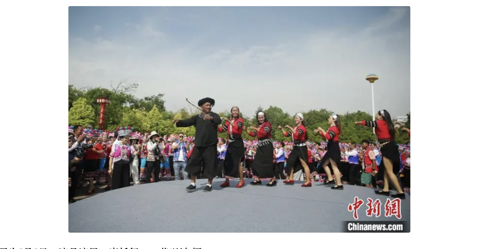
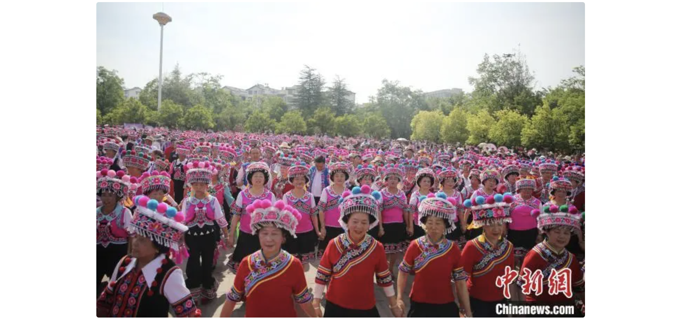

万人齐聚云南牟定 同跳左脚舞共庆“三月会”
中新网楚雄5月5日电 (黄兴鸿)5月5日，“有一种叫云南的生活——云南舞蹈大家跳”暨2024年牟定“三月会”启幕。当日， '上万人身着盛装，在“中国彝族左脚舞之乡”云南省楚雄彝族自治州牟定县同跳左脚舞，为当地民众及八方游客献上精彩 的视听盛宴。 牟定县位于云南省中北部，“三月会”是该县的民族文化及商贸活动盛会，历史悠久，每年农历三月二十七日举行，为期3 天，人们欢聚一起，赶集做买卖，弹起龙头四弦琴、拉起二胡跳左脚舞。2006年，该县被云南省人民政府命名为“彝族左 脚舞之乡”；2008年，牟定彝族左脚舞被列入第二批国家级非物质文化遗产名录；2022年，牟定“三月会”被列入云南省 第五批非物质文化遗产代表性项目名录。云南省文化和旅游厅党组成员、副厅长王江红在活动启幕上致辞介绍，自古以来云南就是歌舞之乡，云南舞蹈是中华舞蹈 宝库中重要的组成部分。“云南舞蹈大家跳”这一活动覆盖该省16个州(市)129个县(市、区)，贯穿全年，旨在传承和弘 扬云南优秀民族民间舞蹈，促进文旅业深度融合发展，加快旅游产品、业态、模式创新和服务创优，推动文旅业高质量发 展，鲜活地呈现“有一种叫云南的生活”。 中共牟定县委书记李明峰表示，左脚舞以娱乐、交往为目的，集歌、舞、乐三位一体，早已融入牟定人民生活的方方面面。 “三月会”是牟定增进民俗文化交流的重要节日，也是牟定扩大对外开放、推动经济高质量发展的重要桥梁纽带。希望广大 游客前来感受左脚舞文化的魅力，领略滇中牟定的活力。欢迎客商投资牟定，共享发展机遇和无限商机。  当天的启幕仪式上，云南省大理、红河、丽江、普洱等地的舞蹈爱好者也带着他们的舞蹈前来以舞会友，《大理三月好风光》 《马缨花》《纳西三部曲》《摩托舞》等耳熟能详的舞蹈，引得大家跟随舞动。随后上万人同跳左脚舞，更是将活动推向了高 潮。 “我从小就喜欢龙头四弦琴，几乎每年都会带琴来参加‘三月会’。”56岁的牟定人毛国民介绍，他与爱人就是在“三月会”上通 过龙头四弦琴传情定情的。  来自昆明的游客陈勇称，当日的万人同跳左脚舞很震撼，来自普洱市澜沧摩托舞表演队的《摩托舞》特别有新意。 “有一种叫云南的生活——云南舞蹈大家跳”暨2024年牟定“三月会”由云南省文化和旅游厅、楚雄州人民政府主办，中共牟定 县委、牟定县人民政府承办。包括万人同跳左脚舞狂欢、非遗巡演、彝绣创意设计展示、彝绣民族服装T台秀等11项活动。